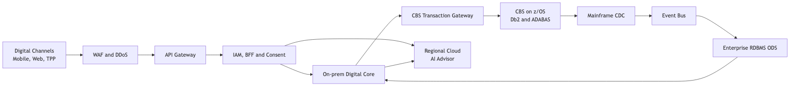
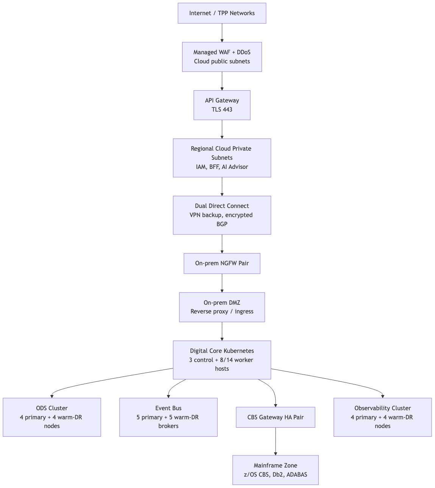

NeoBank Digital Leap
Software Architecture — Final High Level Design
Yiannis Miliaresis · Revision 1.0 · August 2026 · GDE Architecture
MS1 → Final: what got closed
Survived MS1 review
- Wrap, don't replace (Strangler Fig)
- CQRS — reads from ODS projections
- AI behind Advisor Context boundary
Added since MS1
- 8 trust zones, explicit crossing rules
- Recovery classes RC0–RC3 with RTO/RPO
- 14 managed API + event contracts
- Sizing, TCO, P75 delivery plan
MS1 deferred four things publicly. MS2 and this final closed them. That's how milestones are supposed to work.
The architecture in one picture
Channels → fixed ingress → Digital Core. Commands via CBS Gateway only. Reads via CDC → Event Bus → ODS projections.

docs/diagrams/01-high-level-solution.mmd. Arrow direction is normative (HLD §3.1.2).
Trust boundaries by design
Four journeys, one discipline
| Journey | The rule that protects it | Failure behavior |
|---|---|---|
| Authentication & ingress | OIDC + MFA + correlation / idempotency headers; domain services re-check authorization. | Fail closed; sanitized RFC 9457 problem. |
| Account information read | ODS projection + CBS-confirmed recent-write overlay after transfers; freshness metadata exposed. | Read-your-writes for completed transfers; quarantined account readable, writes blocked. |
| Bank transfer | Binary fraud decision first; CBS only via the Gateway; idempotency key spans retries. | Fraud timeout → NOT_SUBMITTED. Unknown CBS outcome → PROCESSING, never fabricated. |
| Open Banking AIS/PIS | Server-issued ConsentContext: TPP, PSU, scope, accounts, SCA. | Missing / expired / out-of-scope context rejected before business processing. |
An HTTP 2xx alone is never proof of success. Journeys are measured at the authoritative durable outcome.
Managed contracts: the HLD's API surface
7 APIs — authority per field
- TransferCommand / TransferStatusResult
- FraudDecision — binary; timeout is not a decline
- CbsTransactionCommandResult — raw CBS codes stay in the Gateway
- AccountInformationResponse — includes freshness + writeCapability
- ConsentContext — server-issued, short-lived
- AdvisorContextResponse — eligible candidates only
7 events — one envelope
- eventId, correlationId, causationId, partitionKey, sourcePosition, payload
- LegacyDataChange · TransferOutcome · ProjectionStatus
- MonthlyStatementSnapshot · AuditEvidence · ConsentChanged
- CacheInvalidation — a hint, never an authority
At-least-once delivery; consumers deduplicate by eventId and order account-scoped. Full tables: Appendix B, six JSON examples.
Network topology — zones made physical
Internet → WAF/DDoS in cloud public subnets → API Gateway (TLS 443) → cloud private (IAM, BFFs, AI Advisor; mTLS, no public IPs).
Cloud↔bank: dual Direct Connect in separate facilities, encrypted BGP + VPN backup. On-prem: NGFW HA pair → DMZ reverse proxy → Digital Core (K8s 3 control + 8/14 workers).
Data tier: ODS, Event Bus quorum, Observability each with warm-DR; CBS Gateway HA pair is the only mainframe door.
Zone relationships/prohibited routes fixed; CIDRs/carriers/bandwidth Phase-0 (L-006). docs/diagrams/06-network-topology.mmd

Recovery classes: priced, not assumed
| Class | RTO | RPO | Scope |
|---|---|---|---|
| RC0 — authority/evidence | 15 min | Zero permanent loss | Commands, outcomes, consent, audit receipts |
| RC1 — customer-critical | 30 min | 5 min reconstructable | Auth, account serving, API layer |
| RC2 — replayable projections | 4 h | Zero after replay | ODS projections to full convergence |
| RC3 — degradable derived | 24 h | 24 h | Statements, AI datasets |
RC0 promotion is human-governed (L-013): Incident Commander + Service Owner + Mainframe Authority. AI and statements degrade independently (NFR-AR-070).
Release discipline — normative, not aspirational
- Build once, promote immutably — signed artifact across DEV → INTEGRATION → PRE-PROD → PROD; config external.
- Admission fails closed — missing provenance, SBOM, scan, or dual-approval (for security / money / CBS / contracts) stops the release.
- Compatibility windows — public & Open Banking APIs ≥ 12 months parallel support; CBS Gateway ≥ 6 months; expand–migrate–contract for data.
- Rollback vs roll-forward — rollback only while state/contract-compatible; committed CBS transactions and durable events are never rolled back.
- Feature flags on a leash — owner, expiry, kill switch; never bypass fraud, consent, CBS authority, or audit.
- Evidence — one canonical release receipt per release; 7 years WORM.
Sizing & operational cost
| Measure | Year 1 | Year 3 |
|---|---|---|
| Registered digital users | 100,000 | 1,000,000 |
| Peak concurrent sessions (5%) | 5,000 | 50,000 |
| Total physical nodes (app 8/14 · ODS 6/12 · bus 6/12 · evidence 8/16 · observability 6/12) | 34 | 66 |
| Infrastructure TCO (low / base / high, USD M/yr, +20% contingency) | 1.48 / 2.42 / 4.24 | 3.22 / 5.20 / 9.11 |
| + Operational staffing (base) | 3.6 total | 7.0 total |
| AI inference (base, low is 90%+ cost-efficient route) | 0.006 | 0.060 |
Bands, not point numbers. Phase 0 validates quotes, licenses, contracted rates (L-009). Not purchasing authority.
Delivery plan: P75, not P50-hopium
External delays modelled as scenarios (52 / 60 / 68–76 wks). Agentic bootstrap budgeted as real work; zero AI uplift assumed (L-011).
Risks & limitations — named, not hidden
| Item | What it is | Boundary / mitigation |
|---|---|---|
| R-009 (High) | Five-person COBOL pool constrains critical path. | Minimize CBS change; reserve 3 of 5; thin-slice early; escalate capacity. |
| L-005 | ODS vendor unselected (Oracle / SQL Server / Db2). | Phase-0 evidence decides; portable canonical model keeps the design portable. |
| L-013 | RC0 recovery promotion is human-governed. | Deliberate: financial-authority DR must not be fully automatic. |
| R-016 (High) | Legacy CBS protocol/encryption/unknown-outcome limits. | Gateway, canonical contracts, PROCESSING state, reconciliation evidence. |
15 limitations · 21 risks. Unaccepted High risks block production readiness with owner + expiry (R-001..R-006, R-009..R-013, R-016, R-019).
Traceability & evidence
- Honest boundary > clever feature — Advisor Context, ODS non-authority, PROCESSING.
- Constraints are the design — 1-yr MVP, 5 COBOL devs, 99.999%, regional GDPR.
- A final HLD — not every question answered; every answered question stable under pressure.
Thank you.
Questions welcome — the architecture crystallizes once you stress it.
Rule 2: The CBS Transaction Gateway is the only path to the mainframe.
Rule 3: The AI Advisor reads only through the Advisor Context boundary.
Rule 4 (final): Unknown outcomes become PROCESSING — never fabricated.